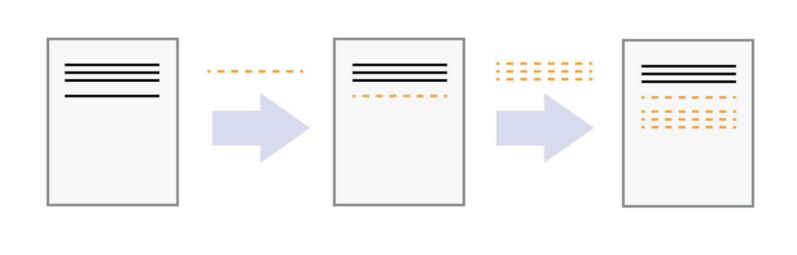
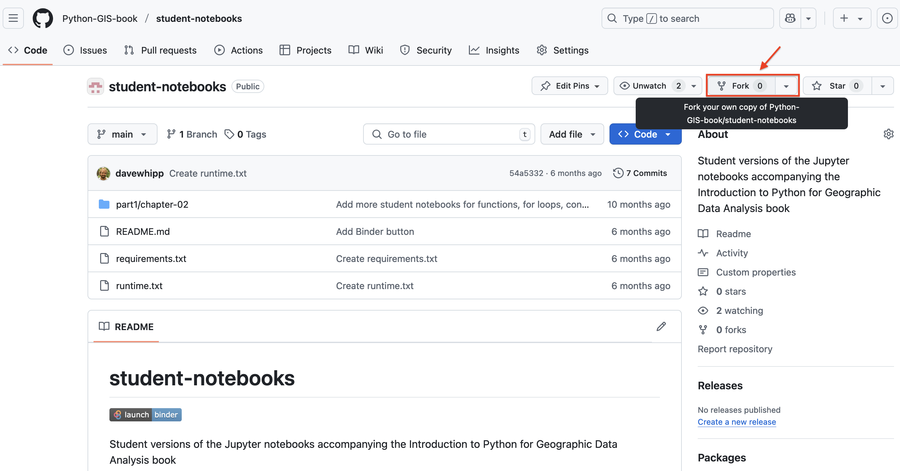
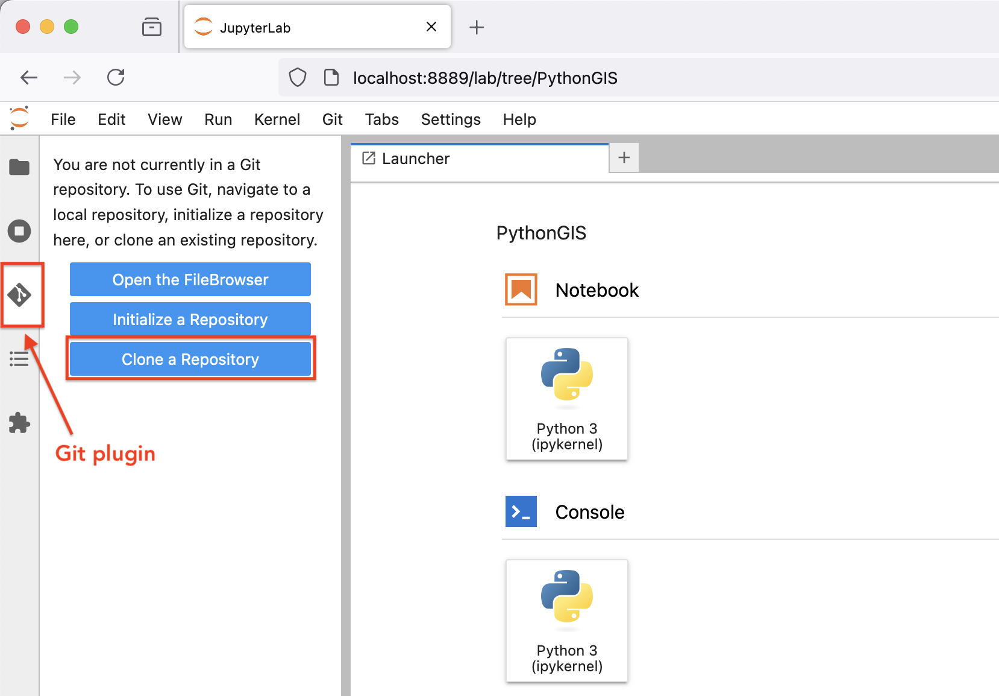
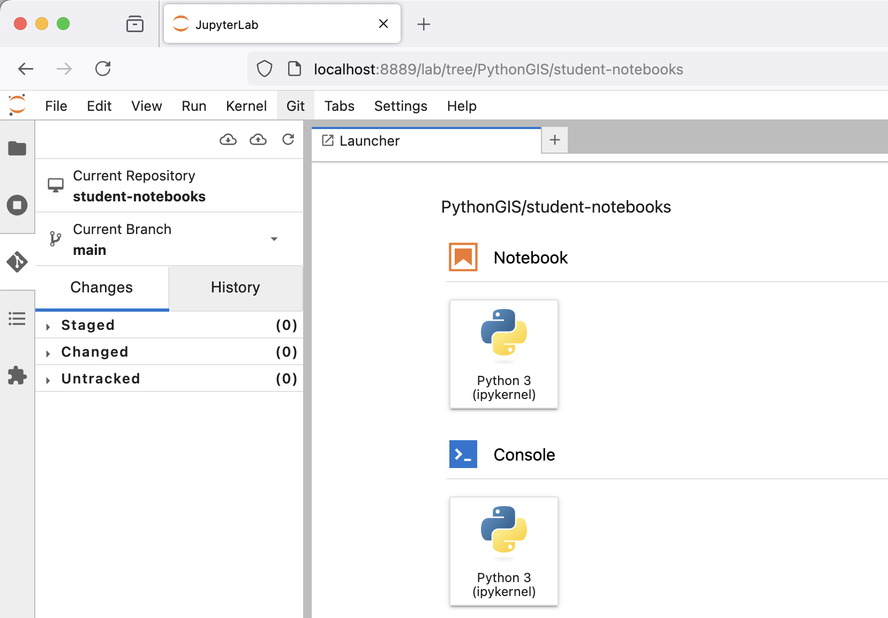
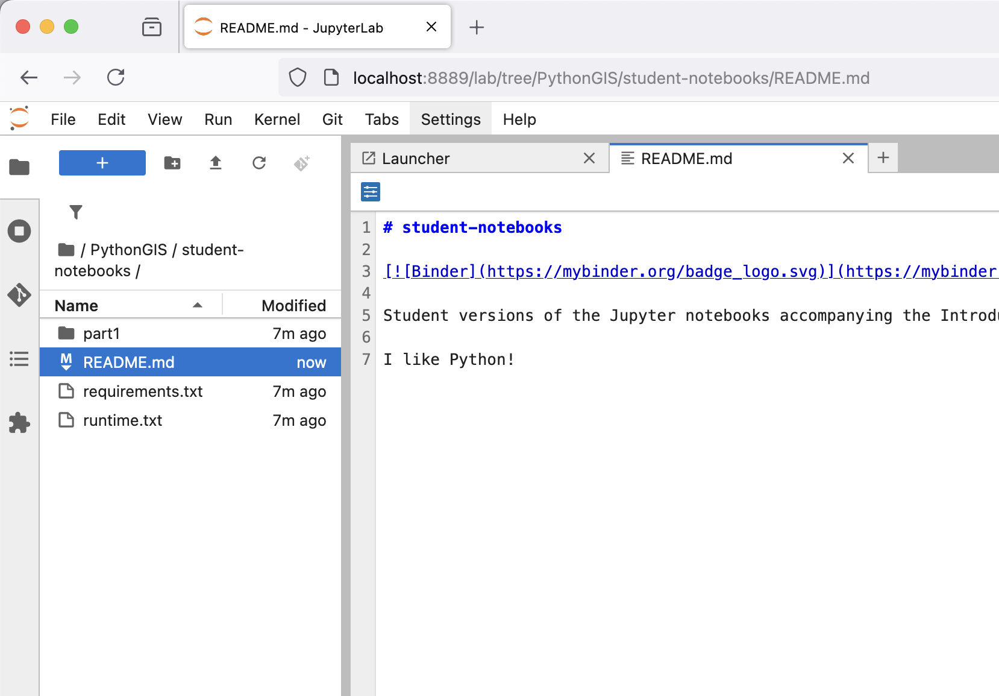
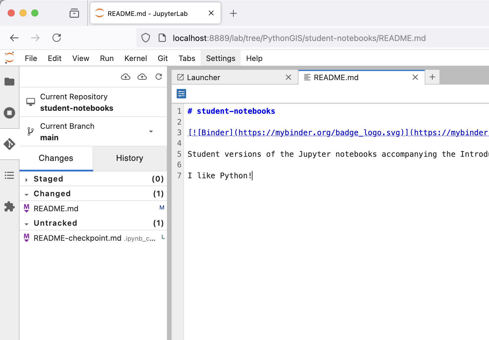
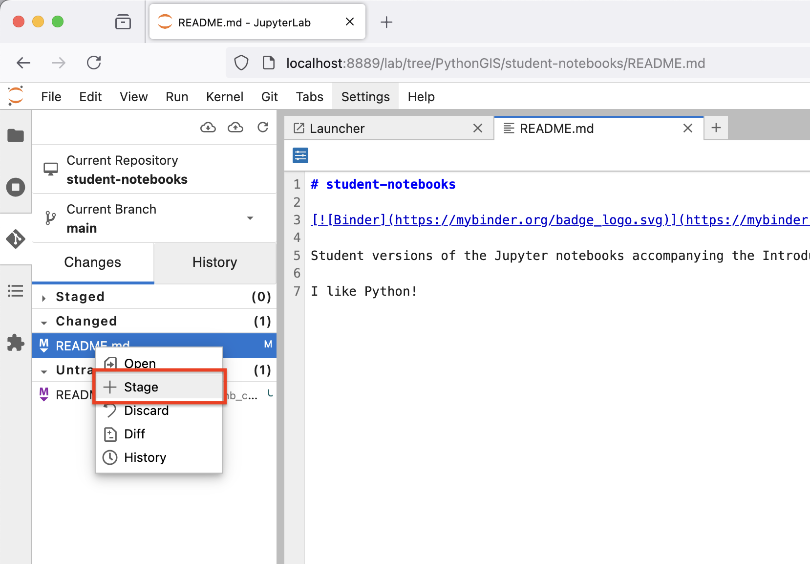
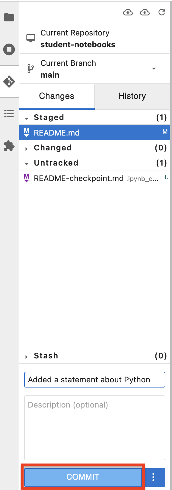
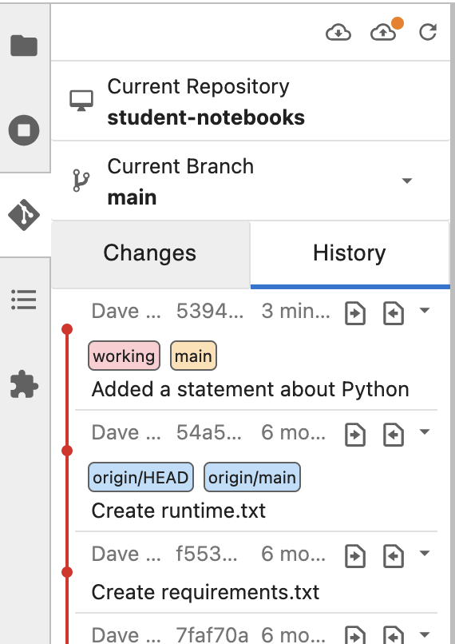

Version control with using Git and GitHub#
This appendix provides an introduction to version control using Git and some step-by-step instructions about how to record changes to our files using Git and GitHub.
The problem#
Figure A.X. An example of the challenge of tracking versions of a manuscript. Source: https://phdcomics.com/comics/archive.php?comicid=1531.
We’ve all been in this situation before, and it seems ridiculous to have multiple nearly identical versions of the same document. Some word processors can help us deal with this situation to some extent, by storing past revisions or using Microsoft Word’s “Track Changes” feature. However, this can be quite impractical if you would like to see modifications that are older than your previous round of changes. And just like changes to a text document, the same issue can arise when making changes to software. And even worse, sometimes your changes break the program entirely. Luckily there are tools to help avoid this problem.
What is version control?#
Version control [1] is used to track and store changes in your files without losing the history of your previous changes. Version control systems start with a base version of a document and then save only the changes you make at each step of the way. You can think of it as a tape: if you rewind the tape and start at the base document, then you can play back each change and end up with your latest version.

Figure A.X. Illustration of committing changes. Source: https://swcarpentry.github.io/git-novice/01-basics.html.
A version control system is a tool that keeps track of these changes for us and helps us version our files (and even merge different versions, a more advanced topic). It allows you to decide which changes should be included the next version, called a commit, and keeps useful metadata about those changes. The complete history of commits for a particular project and their metadata make up a repository (such as our book material repository). Repositories can be kept in sync between different computers and users facilitating collaboration among different people.
One of the most obvious reasons to use version control is to avoid the situation illustrated in Figure A.X entirely by tracking the full history of your changes in a systematic way without the need to have multiple versions of the same file. This history of changes then provides the ability to “go back in time.” Thus, if something goes wrong with your program, you can start from some earlier version of the file when everything was still working. You can also easily compare the differences between versions and see exactly what has changed. In addition to these benefits, version control makes it possible for multiple people to work on the same file or project at the same time while still keeping track of their own changes to the files.
There are multiple different Version Control Systems (VCS; software for doing version control) and one of the most popular ones is Git.
What is Git?#

The Git logo by Jason Long, licensed under the Creative Commons Attribution 3.0 Unported License.
Git is a version control software (developed in 2005 by a rather famous Finn named Linus Torvalds, who also created Linux!) that is used to track and store changes in your files (often source code for programs) without losing the history of past changes. Files in Git are stored in a repository, which you can simply think of as a directory containing files (or other directories) related to a single “project”. In practice git takes “snapshots” of your files each time you commit changes and follows the idea of distributed version control. Git is widely used by professionals to keep track of what they’ve done and to collaborate with other people. Git is the version control system that is running behind the scenes and used with GitHub (“Git” + “Hub”!).
What is GitHub?#

The GitHub Logo.
GitHub provides a handful of important features that build upon what is offered by Git alone:
GitHub relies on Git. The GitHub is a web based Git repository hosting service in principle. Thus, it would not exist without the version control system Git. Git is running all the time in the background when using GitHub.
GitHub is a social (collaborative) network. GitHub is much more than just a hosting service for Git repositories as it is also a social network where people can collaborate and communicate with each other. It is easy to invite other GitHub users to work together on the same project and to discuss project developments. It should thus come as no surprise that GitHub is a highly popular place for sharing codes both openly to the entire world and to smaller groups of collaborators working on the same project.
GitHub supports open source software and open science. Sharing your work publicly to others is one of the basic principles of open science. All publicly available GitHub repositories can be downloaded to your own local computer where you can start modifying the codes for your own purpose. This process is called “forking”. Be aware, however, that you should always check and follow the license terms mentioned in the project, which tell you what you can (or can not) do with the codes that are shared. It is possible that there might be some limitations for commercial use of the codes, for example.
GitHub provides a home for software documentation. GitHub repositories are often also used as web pages for software projects. In GitHub, such web pages typically include technical documentation, instructions, and examples of how to use the codes or software within that project. It is extremely important that you document the codes and programs that you have created, and GitHub provides a nice platform for doing this and sharing the documentation. Almost every GitHub repository (and possibly its subfolders) includes a file called
README.md, which is the front-page of the given repository in GitHub by default. These files are written using a specific simple language called Markdown, which can be used to create nice looking web documents with rich formatting, figures, tables, and so on. Markdown is very easy (and fast) to use once you have learned the basic syntax of how different textual elements are written.GitHub includes useful online tools. There are multiple useful tools integrated into GitHub, such as the possibility to edit the documents or codes directly on the web site. What is even better is that Git is always running in background, so all changes made in the web browser will be saved as git commits. It is also possible to browse the complete history of a file directly from GitHub’s online interface and view all of the changes that have been made.
GitHub has issue tracking. In GitHub it is also possible to give feedback to the developer by creating an “issue” that can be used to report a bug that was found in the code or software, for example. Issues can also be used to track ideas, enhancements, or other plans to projects on GitHub. You can even use issues to organize tasks you’d like to accomplish, such as adding new features or revising old ones.
Usually the Git software is run from a command prompt, however GitHub also provides a way to use Git commands without the need to run any commands in a terminal. It is also possible to use Git and GitHub in some Integrated Development Environments (IDEs).
Basic vocabulary#
Here are a few basic terms that are used often when using git and GitHub (not exhaustive).
Repository: A location where all the files for a particular project are stored, often referred to as a “repo.” Each project will have its own repo, which is usually located on a server and can be accessed by a unique URL (e.g., a link to GitHub page).
Commit: To commit is to write or merge the changes made in the working copy back to the repository. When you commit, you are basically taking a “snapshot” of your repository at that point in time, giving you a checkpoint to which you can reevaluate or restore your project to any previous state. The terms ‘commit’ or ‘checkin’ can also be used as nouns to describe the new revision that is created as a result of committing.
Revision / Version: A revision or a version is any change in made in any form to a document(s).
Clone: Cloning means creating a repository containing the revisions from another repository. This is equivalent to pushing or pulling into an empty (newly initialized) repository. As a noun, two repositories can be said to be clones if they are kept synchronized, and contain the same revisions.
Pull / Push: Copy revisions from one repository to another. Pull is initiated by the receiving repository, while push is initiated by the source. Fetch is sometimes used as a synonym for pull, or to mean a pull followed by an update.
Merge: A merge or integration is an operation in which two sets of changes are applied to a file or set of files.
Using Git and GitHub#
The following sections cover the very basics of version control using Git and GitHub. Specifically, we will introduce how to use JupyterLab to:
Clone a repository from GitHub
Add changes
Commit changes
Push changes to GitHub
We will show how to complete these steps using both the JupyterLab git extension (recommended) and using Git from the command line.
Key concepts#
We use Git to (1) record changes to our files over time and (2) to communicate between the local repository on our computer and the remote repository (repo) on GitHub. Each Git repo contains all the files and folders associated with a project, as well as the revision history of each entity. In general, it is recommended that each project, library, or discrete piece of software have it’s own repository. For example, Python libraries such as pandas, numpy, and matplotlib all have their own repositories.
The most common starting point for working with software in Git is creating a copy of the software, or “cloning” it. This can be done using the command git clone, for example. For repositories you have already copied, you can download the latest changes using the command using git pull, which will fetch (and merge) new changes from GitHub. Finally, the command git push publishes any local changes to GitHub. You can find more information about interacting with Git projects on the Git Source Control Management site.

Figure A.X. Update your Git project using the pull and push commands. Always pull before you push, especially when working in a shared project.
The version control history consists of snapshots of all the files in your project. In order to record changes to your files, we first add changes to a so called staging area (using the command git add). The idea is that you can have a (sometimes messy) working directory, and by using git add you tell Git precisely which files to include in the next committed snapshot. After this, the command git commit can be used to record a permanent snapshot of the staged changes. You can find more information about snapshotting on the Git Source Control Management site.

Figure A.X. Version control steps using Git. Adapted from https://git-scm.com/about/staging-area.
Preparations#
With a general sense of how Git and GitHub work, we can now go through the basics of using Git with a hands-on example. For this we will use the “student” version of the notebooks for this book, which can be found on GitHub at Python-GIS-book/student-notebooks. In order to do this, we assume:
You have installed the Python environment for this course using the instructions from Chapter 1.7.
You have an account on GitHub.com If not, now is a good time to create one.
Before we continue, open a new JupyterLab session if you do not already have one open.
Creating a Personal Access Token#
We will start by creating a Personal Access Token for our GitHub account that will allow you to save changes you make to files in GitHub. A Personal Access Token can be used for many things, but it is required when trying to push changes or access files in private repositories to which you have access rights, for example. For our use, the token will enable us to both push and pull files to/from GitHub.
You can find detailed instructions about how to create a Personal Access Token in the GitHub documentation [2]. However, we note a few things below that may be helpful in the process.
You will need to verify your email address for your GitHub account to create a Personal Access Token. See GitHub email verification [3] for details.
We are creating a “classic” token using Generate new token (classic).
You can name your token whatever you like, but a name like “PythonGIS” might make sense.
The expiration date will be short by default. We recommend an expiration date of one year.
Typical scopes (or permissions) for tokens include: repo, admin:repo_hook, and delete_repo.
Important: Your token will only be visible to you once, so we recommend saving a copy in a secure location, such as with a password manager. Remember, anyone with the token can access, edit, or even delete repositories within the scope of that token!
Creating a fork of the book notebooks#
In order to make a copy of the book notebooks that you can access and edit, we will create a fork of the student version of the book materials. You can create your fork by visiting Python-GIS-book/student-notebooks and clicking on the Fork button on the top left side of the page (Figure A.X).

Figure A.X. Creating a for in GitHub.
After clicking on the Fork button, you can leave everything as it is on the Create a new fork page and simply click Create fork. This will create your personal copy, which can be found in GitHub at https://github.com/[your GitHub username]/student-notebooks. For example, https://github.com/davewhipp/student-notebooks.
Now that your personal fork has been created, you can go to the URL of your fork (e.g., https://github.com/davewhipp/student-notebooks), click on the Code button, and copy the URL listed there under HTTPS. Be sure you go to your personal copy of the book materials at https://github.com/[your GitHub username]/student-notebooks!
Using Git with the JupyterLab Git extension#
Our next task is to create a copy of your fork on your own computer by cloning the files from GitHub. To do this, we will use the Git extension for JupyterLab, as that will make it easy to both pull and push changes to any files as you work with them.
Cloning a repository#
You can start by navigating to a directory in the JupyterLab file browser, where you would like to store your copy of the book materials. Once there, create a directory for the book materials, such as PythonGIS. Double click on the new directory to enter it in the JupyterLab file browser. Next, click on the Git extension button to activate it, and then click on Clone a repository (Figure A.X).

Figure A.X. Using the JupyterLab Git extension.
Once the Clone a repo dialog box appears, paste in the URL to your fork of the book materials and click Clone. You can leave the checkboxes ticked as they are. This is equivalent to the git clone command in a terminal.
If cloning was successful you should now see a directory titled student-notebooks in the JupyterLab file browser.
Checking the Git status#
You can now double click on the student-notebooks directory to enter it, and then activate the Git extension once again to view some basic information. This includes which repository you’re working in, the branch you are in within the repository, and whether any files have changed or are ready to be committed in Git, for example (Figure A.X). This is the equivalent of running the git status command in a terminal.

Figure A.X. Checking the repository status in the JupyterLab Git extension.
Making changes#
Now we can make our first change to one of the repository files. Return to the JupyterLab file browser and double click to open the README.md file. In the tab that opens in JupyterLab, make a small change to the file, such as adding the text “I like Python!” at the end of the document. Once you finish editing, save your changes.

Figure A.X. Making a change to a file.
After saving, return to the Git extension to check the status of the repository. You should see README.md listed under Changed files. Note that you can ignore temporary checkpoint files, such as README-checkpoint.md, which are automatically generated backup copies of files in JupyterLab.

Figure A.X. Changed file status in the JupyterLab extension.
Staging changed file(s)#
These changes are not yet staged for commit, which means that we need to add them first to the list of files we intend to save in a permanent snapshot in Git (i.e., the staging area). To add a file to the staging area, right click on the file in the JupyterLab Git extension and then click + Stage. You should now see the file under Staged files. This is the equivalent of running the git add command in a terminal.

Figure A.X. Staging a file in the JupyterLab extension.
If you accidentally stage a file or wish to remove it for any reason, simply right click on a staged file and select - Unstage to return it to the Changed list.
Committing changes#
Now that the changed file is in the staging area, we can create we can create a permanent snapshot by committing the changes. It is important to always remember to write a short, informative commit message to accompany your changes so you document how the file(s) have changed! Type a message into the commit message text box and then click COMMIT to save a permanent snapshot of your changes. This is the equivalent of running git commit -m "commit message" in a terminal.

Figure A.X. Committing a change in the JupyterLab extension.
Once you click COMMIT, the Git extension will most likely ask you to enter your name and email address. This is because every commit in Git needs to record not only what has changed, but also who made the change (including their email address!). You can use the same information you used when creating your GitHub account.
Once the commit succeeds, you should see the latest set of changes in the History tab of the JupyterLab Git extension. The output here is the equivalent of running git log in a terminal.

Figure A.X. Repository history in the JupyterLab extension.
Note that you will also see earlier changes that have been made to the files in your repository. Remember, Git will record all changes since the Git repository was created!
Pushing changes to GitHub#
Our last step is to synchronize our local changes with the remote repository hosted on GitHub. To do this we will first pull changes from GitHub and then push our modified files to GitHub. It is always good to pull changes before pushing to ensure that any remote changes do not conflict with the changes you are trying to push. You may have already noticed that there is an orange dot that appears in the JuptyerLab git extension indicating we have changes that have not yet been pushed (e.g., Figure A.X).
We can pull any changes from GitHub by clicking on the cloud icon with an arrow pointing downwards (Figure A.X). If everything is OK, you should see “Successfully pulled” in the bottom right corner of the JupyterLab window shortly after clicking. Now you can push the changes to GitHub by clicking the cloud icon with an arrow pointing upwards (Figure A.X). This is the equivalent of running the git push command in a terminal.
Most likely, you will now be prompted to enter your GitHub user credentials. When the Git credentials required dialog box appears, enter your GitHub username, your Personal Access Token, and then click Ok. You GitHub credentials can be managed in a terminal using the command git config.
If you now visit your repository in GitHub, you should find your changed have been pushed from JupyterLab!
Using Git from the command line#
Although it is likely easiest to use Git from the JupyterLab Git extension, we also provide a brief overview of how to use Git from the command line (or terminal) here.
Essential command line tools#
You will need to know a couple of basic command-line commands in order to use Git from the command line. Code Academy’s list of command line commands [4] provides a good overview of commonly used commands for navigating through files on the command line. For using Git on the command line, you should at least be familiar with the following commands.
ls: List the contents of the current directory.ls -a: List the contents of the current directory including hidden files.cd: Change directories. For example,cd student-notebooks.cd ..: Change to the parent directory (up one directory level).
Opening a terminal window in JuptyerLab#
You can open a terminal window in JuptyerLab by going to File -> New -> Terminal in the menu bar or clicking on the Terminal button in the JuptyerLab Launcher tab. You can confirm that Git is working from the Terminal by typing git --version and pressing Enter. You should see the Git version information.
Configuring your Git credentials#
You can configure Git to remember your identity using the git config command. You (hopefully) only need to do this once if working on your own computer. The basic credential commands to define your Git username and email address are:
git config --global user.name "[firstname lastname]"
git config --global user.email "[email@example.com]"
Basic Git commands#
The basic workflow of cloning a repository, adding changes to the staging area, committing, and pushing the changes can be completed using these command-line commands below:
git clone [URL]: Retrieve a repository from a remote location (often from GitHub).git status: Check the status of your repository (use this command often!).git add [file(s)]: Add files to the staging area (so they are ready for the next commit).git commit -m "[descriptive message]": Commit staged files as a new snapshot.git pull: Bring the local branch up to date (fetch and merge changes from the remote).git push: Transmit local commits to the remote repository.
You can find some other useful Git commands from the GitHub GIT CHEAT SHEET [5].
Other handy Git topics#
Managing remote repositories#
Remote repositories are versions of your project that are hosted on a network server system (such as GitHub). When you clone a repository using git clone, Git will automatically start tracking the remote repository from where the project was cloned. You can use the command git remote -v in a terminal, for example, to check which remote repository your local repository is tracking. Using this command you could, for instance, confirm that you are working with your own copy of the student notebooks as the command should show the location of the fork you created if you did so earlier. This can be quite important because you may have problems with permissions if you clone a repository that you do not have permission to push changes to! You can find more information about managing remotes in the Git Source Control Management documentation [6].
Branches#
Branches are parallel versions of code in a repository that start from a specific snapshot and can develop independently without affecting the original files used to make the branch. In the repositories that we are using most of the time, the base branch is called main, so you may see references to that under “Current branch” in the JupyterLab Git extension, for example. When pushing changes to the main branch of a Git repository in a terminal, we can type git push, however the complete syntax for the command is actually git push origin main. The complete command indicates changes should be pushed to the remote repository origin and to the branch main. The remote called origin would typically be the one shown when checking the remotes using the command git remote -v. You can find more about branches in Git in the Git Source Control Management documentation [7].
Resolving conflicts#
When merging files in Git it is sometimes the case that you encounter a merge conflict. A merge conflict might happen if two users have edited the same content in a Git repository, or if you yourself have edited the same content both on GitHub and locally without properly synchronizing the changes. In short, Git will tell you that it is not able to figure out how to combine the changes by announcing a merge conflict. You will then have the task of manually editing together the changed sections of the file(s) to resolve the conflict. You can find more about merge conflicts in the Git Source Control Management documentation [8].
The key thing to remember with merge conflicts is: Don’t panic! It might be a bit frustrating to manually merge changes, but Git nicely identifies the sections of the file(s) that conflict and you can then decide which changes to keep and which to discard. After resolving the conflict you can then commit and push the merged files to get back in sync. A good way to limit the changes of a merge conflict is to always pull before you push!

Figure A.X. The occasional reality of using Git. Source: https://xkcd.com/1597.
Additional resources#
More information about using Git and GitHub can be found at the following links: